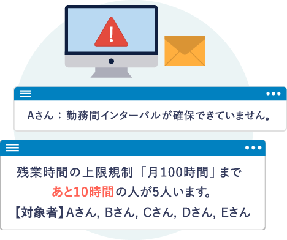
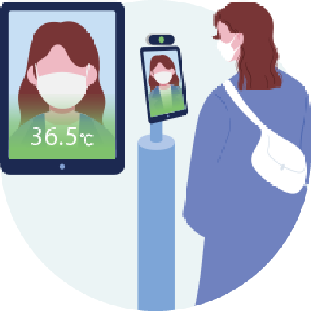
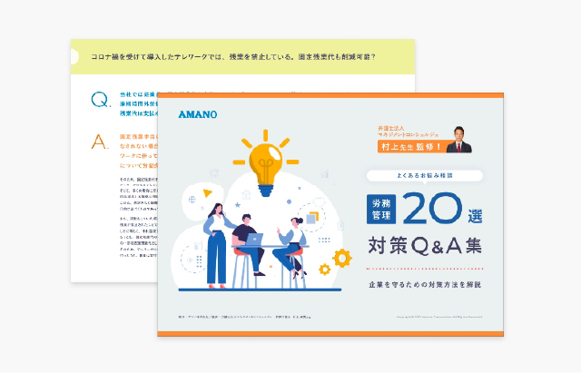
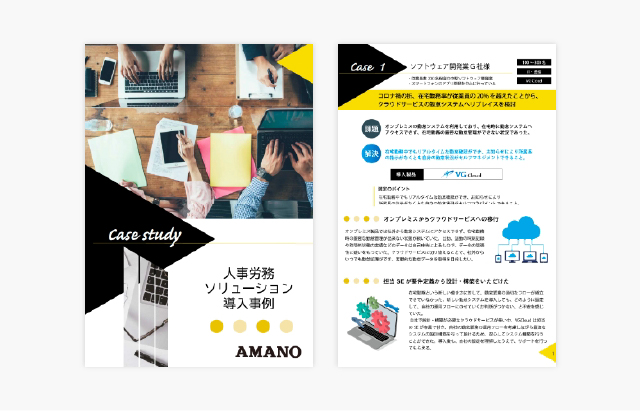

こんな課題をお持ちの方へ
労働時間管理に
漠然とした危機感を
抱いている勤怠管理システムを
使ってはいるが、
“実態と記録”
に乖離が生じている労務トラブルを防ぐための対策を立てたいが、何から手をつけてよいのかわからない
セミナー内容
複雑化する労務トラブルにより、労働基準法だけを遵守していても企業を守れない時代となりつつあります。
労務トラブルを防ぐには「労基署と裁判所がトラブルの際に何を見るのか？」をまず抑えることが必要です。
弁護士と社労士２つの顔を持つ、労働問題対策のスペシャリスト村上先生にご登壇いただき、
実際の事例をもとに、労基の臨検や労働問題の裁判では何が起きるのか、具体的に解説してまいります。
-
労務トラブル時に労基署と裁判所で異なる着目のポイント
労務トラブルの際に、労基署では労災と判断されなかったが、裁判所では労災認定された、といったケースが散見されます。なぜ、このようなことが起こり得るのか、労基署の臨検及び労働問題訴訟の裁判時に、それぞれ着目されるポイントについて解説します。
-
労務トラブルから企業を守るには「法令遵守＋α」が必要
昨今では労働基準法を遵守しているだけでは、企業を守ることはできません。労務トラブルが発生してしまうと、多額の損害賠償請求や風評被害による人材流出など経営に直結する問題に発展しかねません。法令遵守に加えて、どのような管理が必要なのか具体的に解説します。
-
トラブル防止のための勤怠システム活用事例
現在利用している勤怠管理システムが「給与計算を行うため」だけを目的とした仕組みになっていませんか？ これからの時代は「企業と従業員を守るため」に活用していくべきと言われています。労務トラブルを防ぐための勤怠管理システム活用事例をご紹介します。
-
質疑応答
セミナーの中で疑問に思ったこと、もっと深堀して聞きたいことなど、皆様のご質問をチャットにて受付いたします。時間内で回答しきれなかったものは後日レポートにおまとめしてご案内いたします。
講師紹介
弁護士法人マネジメントコンシェルジュ
社会保険労務士clarity 代表社員
村上 元茂
弁護士法人においては、使用者のみを依頼者とし、人事・労務問題を主として取り扱い、問題社員対応、労務紛争防止及び発生した労務紛争解決に注力する。また、働き方改革特化顧問サービスにより各企業の働き方改革への対応サポートに注力している。
社労士法人においては、働き方改革対応のための就業規則作成・変更、テレワーク導入支援及び助成金申請支援を行っている。特に、現在新型コロナウイルスに起因する業績悪化企業に対する助成金申請支援に注力している。
セミナーに関する
お問い合わせ
セミナーに関するお問い合わせは下記よりお願いいたします。
お問い合わせ
アマノ株式会社
時間情報事業本部 事業企画推進部
mail tisinfo@amano.co.jp
こんなこともできる？ ぜひアマノにご相談ください！
-
他システムとの連携不要
パソコンログと
打刻のW管理 -
 労務トラブルを防ぐ
システムナビゲーション -
法令遵守の
シフト作成 -
 検温検査機能付き
顔認証タイムレコーダー
など、貴社の今の
課題に合わせたソリューション
をご提案いたします。
お役立ちダウンロードコンテンツ
アマノが運営するお役立ち情報メディアでは人事・労務の最前線情報をはじめ、
効率化・ノウハウから法律や助成金まで労務全般の課題解決に役立つコンテンツをご紹介しております。
-

【弁護士 村上先生 監修】
労務理のよくあるお悩みQ&A 20選昨今気になるテレワークでの時間外労働・移動時間のお悩みから、副業やメンタルヘルスのお悩みまで、Q&A形式で解説しました。 弁護士 村上先生監修の元、労務リスクから企業を守るための対策方法をお手元でご確認いただけます。
-

人事労務ソリューション導入事例集
IT・通信、サービス、製造、金融、建設、医療、電子など、業種別に8ケースの導入事例をご紹介しております。それぞれの業種特有の勤怠管理の課題を解決するソリューションをご提案いたします。